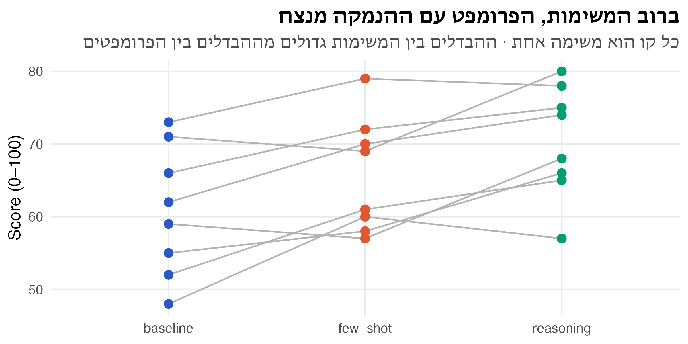

קוד
calls |> group_by(model) |> summarise(total = sum(aht), mean = mean(aht))# A tibble: 5 × 3
model total mean
<fct> <dbl> <dbl>
1 M1 45.0 5.00
2 M2 48.0 5.33
3 M3 36.0 3.99
4 M4 33.9 3.76
5 M5 35.6 3.96ניתוח נתונים סטטיסטי · הרצאה 5
\(a\) רמות של פקטור אחד, \(n\) תצפיות בכל רמה, \(N = an\):
\[ y_{ij} = \mu + \tau_i + \varepsilon_{ij} \qquad \sum_{i=1}^{a}\tau_i = 0 \qquad \varepsilon_{ij} \overset{iid}{\sim} N(0, \sigma^2) \]
\[ H_0: \tau_1 = \dots = \tau_a = 0 \quad (\mu_1 = \dots = \mu_a) \qquad H_1: \tau_i \neq 0 \text{ עבור } i \text{ כלשהו} \]
שלוש הנחות: נורמליות, אי-תלות, שונות שווה בכל הרמות.
הדוגמה: מוקד שירות בוחר את מודל השפה לעוזר AI. 5 מודלים (M1, M2 קטנים, M3 בינוני, M4, M5 גדולים), 9 ימים לכל מודל, והתגובה היא משך הטיפול הממוצע בפנייה (דקות). האם יש הבדל, ואיזה מודל להפעיל?
calls |> group_by(model) |> summarise(total = sum(aht), mean = mean(aht))# A tibble: 5 × 3
model total mean
<fct> <dbl> <dbl>
1 M1 45.0 5.00
2 M2 48.0 5.33
3 M3 36.0 3.99
4 M4 33.9 3.76
5 M5 35.6 3.96\[ \underbrace{\sum_{i,j}(y_{ij} - \bar y_{\cdot\cdot})^2}_{SS_T} = \underbrace{n\sum_{i}(\bar y_{i\cdot} - \bar y_{\cdot\cdot})^2}_{SS_{Tr}\text{: בין הרמות}} + \underbrace{\sum_{i,j}(y_{ij} - \bar y_{i\cdot})^2}_{SS_E\text{: בתוך הרמות}} \]
| מקור | סכום ריבועים | דרגות חופש | ממוצע ריבועים | \(F_0\) |
|---|---|---|---|---|
| בין הרמות | \(SS_{Tr}\) | \(a - 1\) | \(MS_{Tr}\) | \(MS_{Tr}/MS_E\) |
| שגיאה | \(SS_E\) | \(N - a\) | \(MS_E = \hat\sigma^2\) | |
| סך הכול | \(SS_T\) | \(N - 1\) |
summary(fit_ai) Df Sum Sq Mean Sq F value Pr(>F)
model 4 18.0 4.51 5.28 0.0016 **
Residuals 40 34.1 0.85
---
Signif. codes: 0 '***' 0.001 '**' 0.01 '*' 0.05 '.' 0.1 ' ' 1שתי דרכים לענות:
עוד דבר מיום ראשון: ראינו שבימים 6 ו-8 הטיפול היה קצר בכל המודלים, כלומר יש אפקט של יום. נחזור לזה בסוף, במבחן פרידמן.
לפני הניסוי, ראש צוות ה-AI במוקד שאל שתי שאלות:
את השאלות אפשר לכתוב כהשערות על צירוף לינארי של התוחלות:
\[ H_0: \tfrac{1}{2}(\mu_1 + \mu_2) = \tfrac{1}{2}(\mu_4 + \mu_5) \quad\Longleftrightarrow\quad H_0: \mu_1 + \mu_2 - \mu_4 - \mu_5 = 0 \]
\[ H_0: \mu_3 = \mu_4 \quad\Longleftrightarrow\quad H_0: \mu_3 - \mu_4 = 0 \]
ניגוד (contrast) הוא צירוף לינארי של התוחלות
\[ \Gamma = \sum_{i=1}^{a} c_i \mu_i \qquad \text{כאשר} \qquad \sum_{i=1}^{a} c_i = 0 \]
| השאלה | \(c_1\) | \(c_2\) | \(c_3\) | \(c_4\) | \(c_5\) |
|---|---|---|---|---|---|
| קטנים מול גדולים | 1 | 1 | 0 | −1 | −1 |
| M3 מול M4 | 0 | 0 | 1 | −1 | 0 |
האומד: מחליפים כל תוחלת בממוצע של הרמה:
\[ \hat\Gamma = \sum_{i=1}^{a} c_i \bar y_{i\cdot} \]
התוחלת: \(E(\hat\Gamma) = \sum c_i \mu_i = \Gamma\). תחת \(H_0\) היא אפס.
השונות: הממוצעים בלתי תלויים, וכל אחד עם שונות \(\sigma^2/n\):
\[ V(\hat\Gamma) = \sum_{i=1}^{a} c_i^2 \, V(\bar y_{i\cdot}) = \frac{\sigma^2}{n}\sum_{i=1}^{a} c_i^2 \]
מבחן t: מציבים \(MS_E\) במקום \(\sigma^2\):
\[ t_0 = \frac{\sum c_i \bar y_{i\cdot}}{\sqrt{\frac{MS_E}{n}\sum c_i^2}} \sim t_{N-a} \quad \text{(תחת } H_0\text{)} \]
אפשר לכתוב את אותו מבחן כמבחן F, עם \(t_0^2 = F_0\). בעזרת הסכומים \(y_{i\cdot} = n\bar y_{i\cdot}\):
\[ SS_C = \frac{\left(\sum_{i=1}^{a} c_i y_{i\cdot}\right)^2}{n\sum_{i=1}^{a} c_i^2} \qquad\qquad F_0 = \frac{SS_C / 1}{MS_E} \sim F_{1,\; N-a} \]
מאיפה הנוסחה? \(t_0^2 = \frac{(\sum c_i \bar y_{i\cdot})^2}{\frac{MS_E}{n}\sum c_i^2}\). נכפיל מונה ומכנה ב-\(n^2\): המונה הופך ל-\((\sum c_i y_{i\cdot})^2\), והמכנה ל-\(n \cdot MS_E \sum c_i^2\). מכאן \(t_0^2 = \frac{SS_C}{MS_E}\).
סכומי משכי הטיפול: \(y_{1\cdot} = 45.02\), \(y_{2\cdot} = 48.01\), \(y_{3\cdot} = 35.95\), \(y_{4\cdot} = 33.87\), \(y_{5\cdot} = 35.60\).
קטנים מול גדולים, \(c = (1, 1, 0, -1, -1)\):
\[ \sum c_i y_{i\cdot} = 45.02 + 48.01 - 33.87 - 35.60 = 23.56 \qquad SS_{C_1} = \frac{23.56^2}{9 \cdot 4} = 15.42 \]
\[ F_0 = \frac{15.42}{0.854} = 18.06 > F_{0.95;\,1,\,40} = 4.08 \]
דוחים: עם המודלים הגדולים הטיפול קצר יותר. \(\hat\Gamma/2 = (5.17 - 3.86) = 1.31\) דקות בממוצע.
M3 מול M4, \(c = (0, 0, 1, -1, 0)\):
\[ SS_{C_2} = \frac{(35.95 - 33.87)^2}{9 \cdot 2} = 0.24 \qquad F_0 = \frac{0.24}{0.854} = 0.28 < 4.08 \]
לא דוחים: אין עדות להבדל בין M3 ל-M4.
contrast_test <- function(c, totals, n, mse, df_e) {
ss <- sum(c * totals)^2 / (n * sum(c^2))
c(estimate = sum(c * totals / n), SS = ss, F = ss / mse,
p = pf(ss / mse, 1, df_e, lower.tail = FALSE))
}
totals <- tapply(calls$aht, calls$model, sum)
rbind(small_vs_large = contrast_test(c(1, 1, 0, -1, -1), totals, 9, mse, 40),
M3_vs_M4 = contrast_test(c(0, 0, 1, -1, 0), totals, 9, mse, 40)) estimate SS F p
small_vs_large 2.6178 15.4187 18.0627 0.0001243
M3_vs_M4 0.2311 0.2404 0.2816 0.5986067שני ניגודים \(c\) ו-\(d\) הם אורתוגונליים אם
\[ \sum_{i=1}^{a} c_i d_i = 0 \]
\[ SS_{C_1} + SS_{C_2} + \dots + SS_{C_{a-1}} = SS_{Tr} \]
כלומר: ניגודים אורתוגונליים מפרקים את \(SS_{Tr}\) ל-\(a - 1\) שאלות נפרדות, כל אחת עם דרגת חופש אחת.
כל רמה מול כל הרמות שאחריה:
| רמה 1 | רמה 2 | רמה 3 | \(\cdots\) | רמה \(a-1\) | רמה \(a\) | |
|---|---|---|---|---|---|---|
| \(C_1\) | \(-(a-1)\) | 1 | 1 | \(\cdots\) | 1 | 1 |
| \(C_2\) | 0 | \(-(a-2)\) | 1 | \(\cdots\) | 1 | 1 |
| \(C_3\) | 0 | 0 | \(-(a-3)\) | \(\cdots\) | 1 | 1 |
| \(\vdots\) | \(\ddots\) | |||||
| \(C_{a-1}\) | 0 | 0 | 0 | \(\cdots\) | \(-1\) | 1 |
| השאלה | \(c_1\) | \(c_2\) | \(c_3\) | \(c_4\) | \(c_5\) |
|---|---|---|---|---|---|
| \(C_1\): קטנים מול גדולים | 1 | 1 | 0 | −1 | −1 |
| \(C_2\): M1 מול M2 | 1 | −1 | 0 | 0 | 0 |
| \(C_3\): M4 מול M5 | 0 | 0 | 0 | 1 | −1 |
| \(C_4\): M3 מול כל השאר | 1 | 1 | −4 | 1 | 1 |
C <- rbind(small_vs_large = c(1, 1, 0, -1, -1), M1_vs_M2 = c(1, -1, 0, 0, 0),
M4_vs_M5 = c(0, 0, 0, 1, -1), M3_vs_rest = c(1, 1, -4, 1, 1))
C %*% t(C) # off-diagonal zeros: pairwise orthogonal small_vs_large M1_vs_M2 M4_vs_M5 M3_vs_rest
small_vs_large 4 0 0 0
M1_vs_M2 0 2 0 0
M4_vs_M5 0 0 2 0
M3_vs_rest 0 0 0 20ss_c <- apply(C, 1, contrast_test, totals = totals, n = 9, mse = mse, df_e = 40)
round(ss_c, 3) small_vs_large M1_vs_M2 M4_vs_M5 M3_vs_rest
estimate 2.618 -0.332 -0.192 2.078
SS 15.419 0.497 0.166 1.943
F 18.063 0.582 0.195 2.276
p 0.000 0.450 0.661 0.139c(sum_SS_C = sum(ss_c["SS", ]), SS_Tr = summary(fit_ai)[[1]][1, "Sum Sq"])sum_SS_C SS_Tr
18.02 18.02 tibble(contrast = colnames(ss_c), SS = ss_c["SS", ]) |>
mutate(share = SS / sum(SS), contrast = fct_reorder(contrast, SS)) |>
ggplot(aes(share, contrast)) +
geom_col(fill = nanas_pal[["primary"]]) +
geom_text(aes(label = percent(share, 1)), hjust = -0.15) +
scale_x_continuous(labels = percent, limits = c(0, 1)) +
labs(title = "86% מההבדלים בין המודלים: קטנים מול גדולים",
subtitle = "החלק של כל ניגוד ב-SS_Tr = 18.02", x = "Share of SS_Tr", y = NULL)
כש-\(n_i\) שונים, מגדירים את הניגוד על הסכומים \(y_{i\cdot}\):
\[ C = \sum_{i=1}^{a} c_i y_{i\cdot} \qquad E(C) = \sum_{i=1}^{a} c_i n_i (\mu + \tau_i) = \mu\sum_{i=1}^{a} n_i c_i + \sum_{i=1}^{a} n_i c_i \tau_i \]
כדי ש-\(\mu\) יתבטל, התנאי הוא:
\[ \sum_{i=1}^{a} n_i c_i = 0 \qquad\qquad SS_C = \frac{\left(\sum c_i y_{i\cdot}\right)^2}{\sum n_i c_i^2} \]
מבחן התקיים בשלוש כיתות: 40 סטודנטים בכיתה 1, ו-30 בכל אחת מכיתות 2 ו-3. כיתה 3 סמוכה לאתר בנייה. הסטודנטים שלה מבקשים פקטור. האם הטענה מוצדקת?
rooms <- read_csv(file.path(data_dir, "exam_rooms.csv"), show_col_types = FALSE)
rooms |> group_by(room) |> summarise(n = n(), total = sum(grade), mean = mean(grade))# A tibble: 3 × 4
room n total mean
<chr> <int> <dbl> <dbl>
1 room1 40 3014 75.4
2 room2 30 2258 75.3
3 room3 30 2015 67.2fit_rooms <- aov(grade ~ room, data = rooms)
summary(fit_rooms) Df Sum Sq Mean Sq F value Pr(>F)
room 2 1394 697 4.08 0.02 *
Residuals 97 16573 171
---
Signif. codes: 0 '***' 0.001 '**' 0.01 '*' 0.05 '.' 0.1 ' ' 1ה-ANOVA דוחה (\(p = 0.02\)). אבל השאלה ספציפית: כיתה 3 מול שתי האחרות.
צריך \(\sum n_i c_i = 0\) עם \(n = (40, 30, 30)\). ננסה \(c = (1, 1, c_3)\):
\[ 40 + 30 + 30c_3 = 0 \;\Longrightarrow\; c_3 = -\tfrac{7}{3} \;\Longrightarrow\; c = (3, 3, -7) \]
\[ C = 3 \cdot 3014 + 3 \cdot 2258 - 7 \cdot 2015 = 1711 \qquad \sum n_i c_i^2 = 40 \cdot 9 + 30 \cdot 9 + 30 \cdot 49 = 2100 \]
\[ SS_C = \frac{1711^2}{2100} = 1394.1 \qquad F_0 = \frac{1394.1}{170.9} = 8.16 > F_{0.95;\,1,\,97} = 3.94 \]
דוחים: בכיתה 3 הציונים נמוכים באופן מובהק משתי הכיתות האחרות, בכ-8 נקודות. ו-\(SS_C\) הוא כמעט כל \(SS_{Tr} = 1394.2\): בין כיתות 1 ו-2 כמעט אין הבדל.
rt <- tapply(rooms$grade, rooms$room, sum); rn <- table(rooms$room); cc <- c(3, 3, -7)
ss_room3 <- sum(cc * rt)^2 / sum(rn * cc^2)
c(sum_n_c = sum(rn * cc), SS_C = ss_room3, F = ss_room3 / 170.86,
p = pf(ss_room3 / 170.86, 1, 97, lower.tail = FALSE)) sum_n_c SS_C F p
0.000e+00 1.394e+03 8.159e+00 5.242e-03 שאלה לדיון: האם זה מוכיח שהרעש גרם לציונים נמוכים? רק אם הסטודנטים שובצו לכיתות באקראי. אם כיתה 3 הייתה, למשל, הכיתה של מי שנרשם אחרון למבחן, ייתכן שזו אוכלוסייה אחרת.
לבדיקת ניגודים כלליים שנבחרו אחרי שראינו את הנתונים יש שיטה של Scheffé: דוחים את \(H_0: \Gamma = 0\) אם \(SS_C / MS_E > (a-1)F_{1-\alpha;\,a-1,\,N-a}\). היא שומרת על \(\alpha\) גם אם בודקים את כל הניגודים האפשריים, ולכן היא שמרנית מאוד. לא נשתמש בה בקורס, אבל כדאי להכיר את השם.
עם 5 מודלים יש 10 זוגות. אם בודקים כל זוג במבחן t ב-\(\alpha = 0.05\), ו-\(H_0\) נכונה בכל הזוגות:
| מספר המבחנים \(m\) | \(P(\text{לפחות טעות אחת}) = 1 - 0.95^m\) |
|---|---|
| 1 | 0.05 |
| 10 (5 רמות) | 0.40 |
| 45 (10 רמות) | 0.90 |
| 100 | 0.99 |
הנוסחה \(1 - (1-\alpha)^m\) מניחה שהמבחנים בלתי תלויים. השוואות בין זוגות של אותן רמות תלויות (M1–M2 ו-M1–M3 חולקות את \(\bar y_{1\cdot}\), וכולן משתמשות באותו \(MS_E\)), ולכן ה-FWER האמיתי קצת נמוך יותר. הסימולציה בשקף הבא מראה כמה.
set.seed(55)
g <- factor(rep(paste0("M", 1:5), each = 9))
any_reject <- replicate(4000, {
p <- pairwise.t.test(rnorm(45), g, p.adjust.method = "none")$p.value
any(p < 0.05, na.rm = TRUE)
})
mean(any_reject)[1] 0.269כל השיטות משוות הפרש בין ממוצעים לסף. כולן משתמשות בשגיאת התקן של ממוצע, \(s_{\bar y} = \sqrt{MS_E / n}\):
| השיטה | הסף | שולטת ב- |
|---|---|---|
| LSD של Fisher | \(t_{1-\alpha/2,\,N-a}\sqrt{2MS_E/n}\) | שיעור הטעות לכל השוואה. רק אחרי F מובהק |
| Duncan | \(r_\alpha(p, f)\, s_{\bar y}\), תלוי במרחק \(p\) בין הממוצעים | ביניים |
| Tukey HSD | \(q_\alpha(a, f)\, s_{\bar y}\), סף אחד לכל הזוגות | שיעור הטעות למשפחה (FWER) |
למודלים: \(s_{\bar y} = \sqrt{0.854/9} = 0.308\), ו-\(f = N - a = 40\).
c(s_ybar = sqrt(mse / 9), LSD = qt(0.975, 40) * sqrt(2 * mse / 9))s_ybar LSD
0.3080 0.8803 Duncan’s multiple range test משווה את כל הזוגות, אבל הסף תלוי כמה ממוצעים נמצאים בין שני הממוצעים שמשווים.
\[ R_p = r_\alpha(p, f)\cdot\sqrt{\frac{MS_E}{n}} \]
המקדמים הם ערכים של התפלגות הטווח המסוטנדרט (studentized range), אותה התפלגות שבה משתמשת שיטת Tukey. ההבדל הוא ברמת המובהקות: לטווח של \(p\) ממוצעים, Duncan משתמש ב-
\[ \alpha_p = 1 - (1 - \alpha)^{p - 1} \]
ככל ש-\(p\) גדל, \(\alpha_p\) גדלה, והשיטה “סלחנית” יותר. ב-R אין צורך בטבלה:
p <- 2:5
r_duncan <- qtukey((1 - 0.05)^(p - 1), nmeans = p, df = 40) # Duncan's r_alpha(p, 40)
rbind(p = p, alpha_p = 1 - 0.95^(p - 1), r = r_duncan, R_p = r_duncan * sqrt(mse / 9)) |> round(3) [,1] [,2] [,3] [,4]
p 2.000 3.000 4.000 5.000
alpha_p 0.050 0.098 0.143 0.185
r 2.858 3.005 3.102 3.171
R_p 0.880 0.926 0.955 0.977הערכים 2.86, 3.01, 3.10, 3.17 הם בדיוק הערכים בטבלאות של Duncan לדרגות חופש 40. בבחינה תקבלו טבלה. כאן רואים שהיא לא קסם: זו ההתפלגות של \((\bar y_{max} - \bar y_{min})/s_{\bar y}\) מתוך \(p\) ממוצעים, ברמת מובהקות שתלויה ב-\(p\).
מיון: M2 (5.33) · M1 (5.00) · M3 (3.99) · M5 (3.96) · M4 (3.76)
means <- sort(tapply(calls$aht, calls$model, mean), decreasing = TRUE)
R_p <- setNames(r_duncan * sqrt(mse / 9), 2:5)
duncan <- combn(names(means), 2, simplify = FALSE) |>
map(\(pair) {
pos <- match(pair, names(means))
tibble(high = pair[1], low = pair[2], p = diff(pos) + 1,
diff = means[pair[1]] - means[pair[2]], R_p = R_p[as.character(diff(pos) + 1)])
}) |>
list_rbind() |>
mutate(significant = diff > R_p) |>
arrange(desc(p))
duncan# A tibble: 10 × 6
high low p diff R_p significant
<chr> <chr> <dbl> <dbl> <dbl> <lgl>
1 M2 M4 5 1.57 0.977 TRUE
2 M2 M5 4 1.38 0.955 TRUE
3 M1 M4 4 1.24 0.955 TRUE
4 M2 M3 3 1.34 0.926 TRUE
5 M1 M5 3 1.05 0.926 TRUE
6 M3 M4 3 0.231 0.926 FALSE
7 M2 M1 2 0.332 0.880 FALSE
8 M1 M3 2 1.01 0.880 TRUE
9 M3 M5 2 0.0389 0.880 FALSE
10 M5 M4 2 0.192 0.880 FALSE | M2 | M1 | M3 | M5 | M4 | |
|---|---|---|---|---|---|
| ממוצע | 5.33 | 5.00 | 3.99 | 3.96 | 3.76 |
| קבוצה | א | א | ב | ב | ב |
ההמלצה: להפעיל את אחד מ-M3, M4 או M5. הנתונים לא מבדילים ביניהם, ולכן M3, הזול שבהם, הוא בחירה סבירה.
Tukey’s Honest Significant Difference: סף אחד לכל הזוגות, שמבטיח FWER \(= \alpha\) בדיוק (בניסוי מאוזן).
\[ HSD = q_\alpha(a, f)\cdot\sqrt{\frac{MS_E}{n}} \]
\[ q = \frac{\bar y_{max} - \bar y_{min}}{\sqrt{MS_E/n}} \]
רווחי סמך משותפים לכל ההפרשים: \((\bar y_{i\cdot} - \bar y_{k\cdot}) \pm HSD\). בניסוי לא מאוזן (Tukey–Kramer): \(q_\alpha(a, f)\sqrt{\frac{MS_E}{2}\left(\frac{1}{n_i} + \frac{1}{n_k}\right)}\).
\[ HSD = q_{0.05}(5, 40)\cdot 0.308 = 4.04 \cdot 0.308 = 1.244 \]
c(q = qtukey(0.95, nmeans = 5, df = 40), HSD = qtukey(0.95, 5, 40) * sqrt(mse / 9)) q HSD
4.039 1.244 duncan |> mutate(tukey = diff > 1.244) |> select(high, low, diff, duncan = significant, tukey)# A tibble: 10 × 5
high low diff duncan tukey
<chr> <chr> <dbl> <lgl> <lgl>
1 M2 M4 1.57 TRUE TRUE
2 M2 M5 1.38 TRUE TRUE
3 M1 M4 1.24 TRUE FALSE
4 M2 M3 1.34 TRUE TRUE
5 M1 M5 1.05 TRUE FALSE
6 M3 M4 0.231 FALSE FALSE
7 M2 M1 0.332 FALSE FALSE
8 M1 M3 1.01 TRUE FALSE
9 M3 M5 0.0389 FALSE FALSE
10 M5 M4 0.192 FALSE FALSETukeyHSD(fit_ai) Tukey multiple comparisons of means
95% family-wise confidence level
Fit: aov(formula = aht ~ model, data = calls)
$model
diff lwr upr p adj
M2-M1 0.33222 -0.9117 1.576159 0.9397
M3-M1 -1.00778 -2.2517 0.236159 0.1617
M4-M1 -1.23889 -2.4828 0.005048 0.0514
M5-M1 -1.04667 -2.2906 0.197270 0.1354
M3-M2 -1.34000 -2.5839 -0.096063 0.0292
M4-M2 -1.57111 -2.8150 -0.327174 0.0072
M5-M2 -1.37889 -2.6228 -0.134952 0.0233
M4-M3 -0.23111 -1.4750 1.012826 0.9836
M5-M3 -0.03889 -1.2828 1.205048 1.0000
M5-M4 0.19222 -1.0517 1.436159 0.9918diff: ההפרש בין הממוצעים (השורה \(-\) העמודה). M2-M1 = 0.33: עם M2 הטיפול ארוך מאשר עם M1 ב-0.33 דקותlwr, upr: רווח סמך משותף של 95%: \(\text{diff} \pm 1.244\). ב-95% מהניסויים כל עשרת הרווחים יכילו את ההפרש האמיתי יחדp adj: p-value מתוקן להשוואות מרובות. מובהק אם קטן מ-0.05, כלומר אם הרווח לא כולל את 0M4-M1: ההפרש 1.239, וה-HSD הוא 1.244. p adj = 0.051. לא מובהק, בהפרש של חמש אלפיות דקהלהדגיש כמה שרירותי הסף הזה. M4-M1 עם p = 0.051 ו-M2-M3 עם p = 0.02 הם לא “עולמות שונים”. מדווחים את הרווח, לא רק כן/לא.
TukeyHSD(fit_ai)$model |>
as_tibble(rownames = "pair") |>
mutate(pair = fct_reorder(pair, diff), significant = `p adj` < 0.05) |>
ggplot(aes(diff, pair, colour = significant)) +
geom_vline(xintercept = 0, colour = nanas_pal[["grey"]]) +
geom_errorbar(aes(xmin = lwr, xmax = upr), width = 0.25, linewidth = 1, orientation = "y") +
geom_point(size = 3) +
scale_colour_manual(values = c(`TRUE` = nanas_pal[["accent"]], `FALSE` = nanas_pal[["grey"]]),
labels = c(`TRUE` = "מובהק", `FALSE` = "לא מובהק")) +
labs(title = "שלושה זוגות מובהקים לפי Tukey: M2 מול M3, M4 ו-M5",
subtitle = "רווחי סמך משותפים 95% להפרשים · רווח שלא חוצה את 0 הוא מובהק",
x = "Difference in mean handle time (min)", y = NULL, colour = NULL)
| זוג | הפרש | LSD (0.88) | Duncan (\(R_p\)) | Tukey (1.244) |
|---|---|---|---|---|
| M2–M4 | 1.57 | ✓ | ✓ (0.98) | ✓ |
| M2–M5 | 1.38 | ✓ | ✓ (0.96) | ✓ |
| M2–M3 | 1.34 | ✓ | ✓ (0.93) | ✓ |
| M1–M4 | 1.24 | ✓ | ✓ (0.96) | ✗ |
| M1–M5 | 1.05 | ✓ | ✓ (0.93) | ✗ |
| M1–M3 | 1.01 | ✓ | ✓ (0.88) | ✗ |
| M2–M1, M3–M4, M3–M5, M5–M4 | ≤ 0.33 | ✗ | ✗ | ✗ |
| המצב | השיטה | ב-R |
|---|---|---|
| מעט שאלות, מתוכננות מראש | ניגודים, \(\alpha\) רגילה | ידני, pf() |
| כל הזוגות, אחרי F מובהק | Tukey HSD | TukeyHSD() |
| כל הזוגות, כשהבחינה דורשת | Duncan | qtukey() + טבלה |
הכלל החשוב ביותר: מחליטים על השיטה לפני שמסתכלים על התוצאות. אם בוחרים את השיטה שנותנת את התוצאה ה”נכונה”, כל התיקון לא שווה כלום.
הדוגמה: זמן התגובה של API בארבעה אזורי ענן (regions), 12 בקשות מכל אזור. זמני תגובה מוטים ימינה, עם ערכים חריגים.
set.seed(162)
latency <- tibble(region = factor(rep(c("eu-west", "us-east", "il-central", "ap-south"), each = 12),
levels = c("eu-west", "us-east", "il-central", "ap-south")),
ms = round(rlnorm(48, log(rep(c(150, 155, 210, 220), each = 12)), 0.8)))
ggplot(latency, aes(ms, region)) +
geom_boxplot(width = 0.5, outlier.shape = NA, colour = "grey60") +
geom_point(colour = nanas_pal[["primary"]], size = 2.5, alpha = 0.7,
position = position_jitter(height = 0.1, seed = 3)) +
labs(title = "זמני תגובה מוטים, עם כמה בקשות איטיות מאוד",
subtitle = "12 בקשות מכל אזור",
x = "Latency (ms)", y = NULL)
fit_lat <- aov(ms ~ region, data = latency)
summary(fit_lat) Df Sum Sq Mean Sq F value Pr(>F)
region 3 292464 97488 2.35 0.085 .
Residuals 44 1823008 41432
---
Signif. codes: 0 '***' 0.001 '**' 0.01 '*' 0.05 '.' 0.1 ' ' 1shapiro.test(resid(fit_lat))
Shapiro-Wilk normality test
data: resid(fit_lat)
W = 0.76, p-value = 2e-07הכללה של מבחן סכום הדירוגים (הרצאה 1) ליותר משני מדגמים.
\[ y_{ij} = \mu + \tau_i + \varepsilon_{ij} \]
תחת \(H_0\) הדרגות מתפזרות באקראי בין הרמות. כמו במבחן סכום הדירוגים, כל דרגה מתפלגת אחיד על \(\{1, \dots, N\}\):
\[ E(R_{ij}) = \frac{N+1}{2} \qquad V(R_{ij}) = \frac{N^2 - 1}{12} \]
ב-ANOVA (בהנחת נורמליות):
\[ \frac{SS_{Tr}}{\sigma^2} = \frac{\sum_{i=1}^{a} n_i(\bar y_{i\cdot} - \bar y_{\cdot\cdot})^2}{\sigma^2} \sim \chi^2_{a-1} \]
ב-Kruskal–Wallis: אותו ביטוי, על הדרגות. \(\bar R_{i\cdot}\) הוא ממוצע הדרגות ברמה \(i\), ו-\(\sigma^2\) מוחלף בשונות הידועה של דרגה, \(\frac{N(N+1)}{12}\) (בקירוב):
\[ K = \frac{12}{N(N+1)}\sum_{i=1}^{a} n_i\left(\bar R_{i\cdot} - \frac{N+1}{2}\right)^2 = \frac{12}{N(N+1)}\sum_{i=1}^{a}\frac{R_{i\cdot}^2}{n_i} - 3(N+1) \]
מאיפה \(\frac{N(N+1)}{12}\) ולא \(\frac{N^2-1}{12}\)? ההבדל הוא גורם של \(\frac{N-1}{N}\), שנובע מכך שהדרגות נדגמות “בלי החזרה” (אותו תיקון של אוכלוסייה סופית שראינו במבחן סכום הדירוגים). עם הגורם הזה, \(K\) מתפלג בדיוק \(\chi^2_{a-1}\) אסימפטוטית. כשיש דרגות זהות (ties) נותנים לכל התצפיות הזהות את ממוצע הדרגות שלהן, ומחלקים את \(K\) בגורם תיקון \(1 - \frac{\sum (t^3 - t)}{N^3 - N}\), כאשר \(t\) הוא גודל כל קבוצת ערכים זהים. R עושה את זה אוטומטית.
מפעל טקסטיל בודק 5 רמות של אחוז כותנה בבד (15%–35%), 6 דגימות בכל רמה. האם אחוז הכותנה משפיע על חוזק המתיחה?
cotton <- read_csv(file.path(np_data_dir, "cotton_strength.csv"), show_col_types = FALSE) |>
mutate(cotton_pct = factor(cotton_pct), rank = rank(strength))
cotton |>
group_by(cotton_pct) |>
summarise(n = n(), strength = paste(sort(strength), collapse = ", "),
R = sum(rank), R_bar = mean(rank))# A tibble: 5 × 5
cotton_pct n strength R R_bar
<fct> <int> <chr> <dbl> <dbl>
1 15 6 8.5, 9.9, 10.3, 11.6, 12.8, 15.2 58 9.67
2 20 6 10.6, 10.8, 11.3, 11.6, 12.3, 13.4 66.5 11.1
3 25 6 13.7, 14, 14.4, 14.5, 15, 15.5 123 20.5
4 30 6 15.1, 15.8, 15.9, 16, 16.2, 17 163 27.2
5 35 6 10, 10.3, 10.4, 10.9, 12.2, 14.1 54.5 9.08\(N = 30\), \(a = 5\), \(n_i = 6\). סכומי הדרגות: \(R_{i\cdot} = 58,\ 66.5,\ 123,\ 163,\ 54.5\).
\[ K = \frac{12}{30 \cdot 31}\cdot\frac{58^2 + 66.5^2 + 123^2 + 163^2 + 54.5^2}{6} - 3 \cdot 31 = 19.81 \]
\[ K = 19.81 > \chi^2_{0.95,\,4} = 9.49 \]
דוחים את \(H_0\): אחוז הכותנה משפיע על חוזק הבד.
kruskal.test(strength ~ cotton_pct, data = cotton)
Kruskal-Wallis rank sum test
data: strength by cotton_pct
Kruskal-Wallis chi-squared = 20, df = 4, p-value = 5e-04הערך ש-R מדווח (19.814) קצת גבוה מהחישוב הידני (19.805), כי יש בנתונים ערכים זהים, ו-R מחלק בגורם התיקון לדרגות זהות. ב-ANOVA על אותם נתונים מתקבל \(F = 13.9\), עם \(p = 4.3 \times 10^{-6}\). ה-p-value של Kruskal–Wallis (\(5.4 \times 10^{-4}\)) גדול יותר: כשהנחת הנורמליות מתקיימת, המבחן הפרמטרי חזק יותר. המבחן הא-פרמטרי מוותר על חלק מהמידע (הערכים עצמם) בתמורה לעמידות.
kruskal.test(ms ~ region, data = latency)
Kruskal-Wallis rank sum test
data: ms by region
Kruskal-Wallis chi-squared = 12, df = 3, p-value = 0.009summary(aov(log(ms) ~ region, data = latency)) Df Sum Sq Mean Sq F value Pr(>F)
region 3 7.42 2.473 4.75 0.0059 **
Residuals 44 22.91 0.521
---
Signif. codes: 0 '***' 0.001 '**' 0.01 '*' 0.05 '.' 0.1 ' ' 1אחרי Kruskal–Wallis מובהק, משווים זוגות במבחן סכום הדירוגים, ומתקנים להשוואות מרובות:
pairwise.wilcox.test(latency$ms, latency$region, p.adjust.method = "bonferroni")
Pairwise comparisons using Wilcoxon rank sum exact test
data: latency$ms and latency$region
eu-west us-east il-central
us-east 0.468 - -
il-central 1.000 0.060 -
ap-south 1.000 0.003 1.000
P value adjustment method: bonferroni אחרי Kruskal–Wallis, איך אומדים ניגוד \(\Gamma = \sum c_i \tau_i\) בלי ממוצעים?
דוגמה קטנה: \(y_{1j} = \{3, 7, 8\}\) ו-\(y_{2j} = \{0, 1, 2\}\). החציון הכללי הוא 2.5, וחציוני הקבוצות הם 7 ו-1:
\[ \hat\tau_1 = 7 - 2.5 = 4.5 \qquad \hat\tau_2 = 1 - 2.5 = -1.5 \qquad \hat\tau_1 + \hat\tau_2 = 3 \neq 0 \]
לכל זוג רמות \((i, k)\), מחשבים את החציון של כל ההפרשים בין תצפית מרמה \(i\) לתצפית מרמה \(k\):
\[ Z_{ik} = \underset{j,\,m}{\text{median}}\{y_{ij} - y_{km}\} \qquad Z_{ii} = 0 \qquad\qquad \hat\tau_i = \frac{1}{a}\sum_{k=1}^{a} Z_{ik} \]
מכיוון ש-\(Z_{ik} = -Z_{ki}\), הסכום \(\sum_i \hat\tau_i = \frac{1}{a}\sum_i\sum_k Z_{ik} = 0\).
בדוגמה הקטנה: 9 ההפרשים \(y_{1j} - y_{2m}\) הם \(\{3, 2, 1, 7, 6, 5, 8, 7, 6\}\), והחציון שלהם \(Z_{12} = 6\). לכן \(Z_{21} = -6\), ו-
\[ \hat\tau_1 = \frac{0 + 6}{2} = 3 \qquad \hat\tau_2 = \frac{-6 + 0}{2} = -3 \qquad \hat\tau_1 + \hat\tau_2 = 0 \;\checkmark \]
\(Z_{ik}\) הוא אומד Hodges–Lehmann להזזה בין שתי רמות: האומד שמתאים למבחן סכום הדירוגים, כמו שהפרש ממוצעים מתאים למבחן t. הוא עמיד לערכים חריגים, ומקיים אנטי-סימטריה. ממוצע של אומדי ההזזה מול כל הרמות נותן “אפקט” לכל רמה, ביחס לרמה ממוצעת.
השאלה: האם הקצוות (15% ו-35%) חלשים מ-30%? \(\Gamma = \frac{1}{2}(\tau_1 + \tau_5) - \tau_4\).
y_by_level <- split(cotton$strength, cotton$cotton_pct)
Z <- outer(seq_along(y_by_level), seq_along(y_by_level),
Vectorize(\(i, k) median(outer(y_by_level[[i]], y_by_level[[k]], "-"))))
tau_hat <- rowMeans(Z)
round(tau_hat, 2)[1] -1.86 -1.26 1.73 3.22 -1.83sum(tau_hat) # 0 by construction[1] 2.22e-160.5 * (tau_hat[1] + tau_hat[5]) - tau_hat[4][1] -5.065\[ \hat\Gamma = \tfrac{1}{2}(-1.86 + -1.83) - 3.22 = -5.06 \]
בד עם 15% או 35% כותנה חלש בכ-5 יחידות מבד עם 30% כותנה.
דוגמה: צוות AI בודק שלוש גרסאות של פרומפט על 8 משימות מבחן (eval set). כל תשובה מקבלת ציון 0–100.
זה גם המצב של המודלים במוקד: כל המודלים עבדו באותם 9 ימים, והיום הוא בלוק.
llm <- read_csv(file.path(np_data_dir, "llm_prompt_eval.csv"), show_col_types = FALSE) |>
mutate(prompt = factor(prompt, levels = c("baseline", "few_shot", "reasoning")),
task = factor(task))
ggplot(llm, aes(prompt, score, group = task)) +
geom_line(colour = "grey70") +
geom_point(aes(colour = prompt), size = 3, show.legend = FALSE) +
labs(title = "ברוב המשימות, הפרומפט עם ההנמקה מנצח",
subtitle = "כל קו הוא משימה אחת · ההבדלים בין המשימות גדולים מההבדלים בין הפרומפטים",
x = NULL, y = "Score (0–100)")
תחת \(H_0\) (אין הבדל בין הטיפולים), בכל בלוק כל סידור של הדרגות סביר באותה מידה, ולכן \(E(R_j) = \frac{b(k+1)}{2}\):
\[ Q = \frac{12}{b\,k\,(k+1)}\sum_{j=1}^{k}\left(R_j - \frac{b(k+1)}{2}\right)^2 = \frac{12}{b\,k\,(k+1)}\sum_{j=1}^{k} R_j^2 - 3\,b\,(k+1) \]
תחת \(H_0\), \(Q \sim \chi^2_{k-1}\) בקירוב. דוחים את \(H_0\) אם \(Q > \chi^2_{1-\alpha,\,k-1}\).
llm_ranked <- llm |> group_by(task) |> mutate(rank = rank(score)) |> ungroup()
llm_ranked |> select(task, prompt, rank) |> pivot_wider(names_from = prompt, values_from = rank)# A tibble: 8 × 4
task baseline few_shot reasoning
<fct> <dbl> <dbl> <dbl>
1 1 1 2 3
2 2 1 2 3
3 3 2 1 3
4 4 1 3 2
5 5 1 2 3
6 6 2 1 3
7 7 1 3 2
8 8 1 2 3llm_ranked |> group_by(prompt) |> summarise(R = sum(rank))# A tibble: 3 × 2
prompt R
<fct> <dbl>
1 baseline 10
2 few_shot 16
3 reasoning 22\[ Q = \frac{12}{8 \cdot 3 \cdot 4}\left(10^2 + 16^2 + 22^2\right) - 3 \cdot 8 \cdot 4 = 105 - 96 = 9 > \chi^2_{0.95,\,2} = 5.99 \]
דוחים: יש הבדל בין הפרומפטים.
friedman.test(score ~ prompt | task, data = llm)
Friedman rank sum test
data: score and prompt and task
Friedman chi-squared = 9, df = 2, p-value = 0.01kruskal.test(score ~ prompt, data = llm) # ignores the blocks
Kruskal-Wallis rank sum test
data: score by prompt
Kruskal-Wallis chi-squared = 4.1, df = 2, p-value = 0.1friedman.test(aht ~ model | day, data = calls)
Friedman rank sum test
data: aht and model and day
Friedman chi-squared = 23, df = 4, p-value = 1e-04המקבילה הפרמטרית של Friedman היא ניתוח שונות דו-כיווני בלי אינטראקציה, עם הטיפול והבלוק כשני פקטורים: aov(score ~ prompt + task). זה תכנון בבלוקים אקראיים (randomised complete block design), ונגיע אליו בהרצאה 6 ובהרצאה על תכנון ניסויים. לשני טיפולים בלבד (\(k = 2\)), Friedman שקול למבחן הסימן למדגמים מזווגים מהרצאה 1.
| השאלה | הכלי | ב-R |
|---|---|---|
| שאלה ספציפית, מתוכננת מראש | ניגוד, \(SS_C\), \(F_{1,\,N-a}\) | ידני, pf() |
| לפרק את \(SS_{Tr}\) לשאלות נפרדות | \(a - 1\) ניגודים אורתוגונליים | |
| כל הזוגות (גרסת הבחינה) | Duncan, \(R_p = r_\alpha(p, f)\,s_{\bar y}\) | qtukey((1-α)^(p-1), p, f) |
| כל הזוגות, FWER \(= \alpha\) | Tukey HSD, \(q_\alpha(a, f)\,s_{\bar y}\) | TukeyHSD() |
| נתונים מוטים, חריגים, סדר | Kruskal–Wallis, \(K \sim \chi^2_{a-1}\) | kruskal.test() |
| זוגות אחרי Kruskal–Wallis | סכום דירוגים + תיקון | pairwise.wilcox.test() |
| ניגוד עמיד לחריגים | חציונים של הפרשים, \(Z_{ik}\) | |
| טיפולים בתוך בלוקים | Friedman, \(Q \sim \chi^2_{k-1}\) | friedman.test() |
בהרצאה הבאה: ניתוח שונות עם כמה פקטורים, אינטראקציות, ובלוקים כחלק מהמודל.